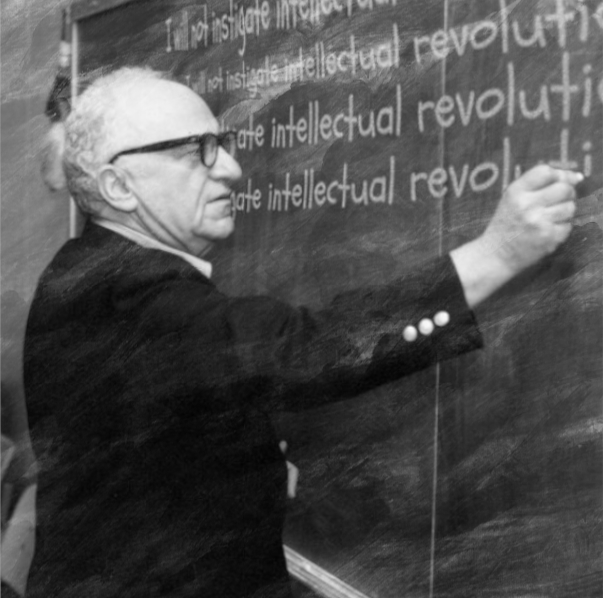
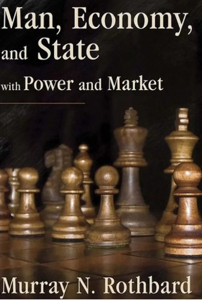
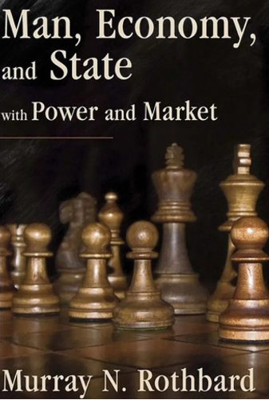

Murray Newton Rothbard
Murray Newton Rothbard (Nova Iorque, 2 de março de 1926 – Nova Iorque, 7 de janeiro de 1995) foi um economista heterodoxo norte-americano da Escola Austríaca, historiador, e filósofo político que ajudou a definir o conceito moderno de libertarianismo. Ele fundou e foi principal teórico de uma vertente de anarquismo baseada no livre mercado, denominada "anarcocapitalismo", um firme defensor do revisionismo histórico e uma figura central no movimento libertário americano do século XX. Ele escreveu mais de vinte livros sobre teoria política, revisionismo histórico, economia e outros assuntos.
Rothbard afirmou que todos os serviços prestados pelo "sistema de monopólio do estado corporativo" poderiam ser fornecidos de forma mais eficiente pelo setor privado e escreveu que o estado é "a organização do roubo sistematizado e em larga escala". Ele chamou o sistema bancário de reservas fracionárias de uma forma de fraude e se opôs ao banco central. Ele se opôs categoricamente a todo intervencionismo militar, político e econômico nos assuntos de outras nações. De acordo com o seu protegido Hans-Hermann Hoppe, "não haveria nenhum movimento anarcocapitalista para falar sem Rothbard".
O economista Jeffrey Herbener, que chama Rothbard de amigo e "mentor intelectual", escreveu que Rothbard recebeu "apenas ostracismo" da academia tradicional. Rothbard rejeitou as principais metodologias econômicas e, em vez disso, adotou a praxeologia de seu mais importante precursor intelectual, Ludwig von Mises. Para promover suas ideias econômicas e políticas, Rothbard juntou-se a Llewellyn H. "Lew" Rockwell, Jr. e Burton Blumert em 1982 para estabelecer o Instituto Ludwig von Mises em Alabama.
Principais Obras
 
